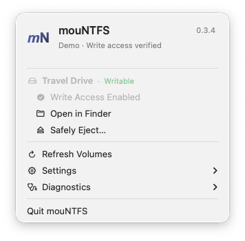
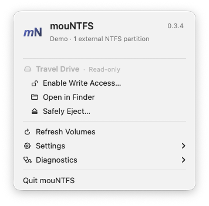
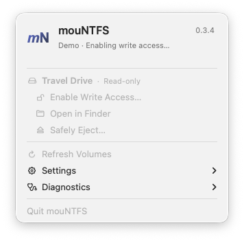

01
Connect your drive
Open mouNTFS and select the external NTFS partition you want to use.
No reformatting. Enable writing from the menu bar, then copy files in Finder.
macOS 13+ · Requires macFUSE, ntfs-3g and system permissions. Development builds are ad-hoc signed and not notarized.
Free & open source · For macOS

Use the drive you already have.
Copy and edit files after enabling writing.
MIT licensed. No app license activation.
After driver setup, everyday use starts in the menu bar.
Open mouNTFS and select the external NTFS partition you want to use.
Choose Enable Write Access, complete macOS authorization and wait for mounting to finish.
Copy and edit files. Close files before using Safely Eject when you are finished.
See your drives, enable writing and open Finder from the menu bar. Progress stays visible while the app works; reports are there when you need them.


Start with the drivers, then add the app. These steps are required before you can enable writing.
With Homebrew installed, run these two commands:
brew install --cask macfuse
brew install gromgit/fuse/ntfs-3g-macFollow the macFUSE setup guide for approval and restart requirements. The default kernel backend may require a startup security change on Apple Silicon.
Builds are currently distributed through GitHub Actions, rather than as a notarized public release.
Device access denied? Check Full Disk Access for the actual ntfs-3g executable. Administrator authorization is a separate permission. The usage guide covers both.
No. mouNTFS enables writing to an existing external NTFS partition. It does not format drives. A damaged or hibernated volume may need attention in Windows before writing can be enabled.
No. Connecting a drive updates the list; you choose when to enable writing. macOS may request administrator authorization during an operation. The app does not save your password.
The app requires macOS 13+ and compatible drivers. Ordinary mounting has limited user-reported success on Apple Silicon; broader hardware and driver combinations still need testing. Only external NTFS partitions are mount targets.
Open Diagnostics for the operation log and read-only disk scan. Check the usage guide for driver compatibility, permissions and busy drives. Do not format a drive just because an operation failed.
Human–AI collaboration
An experiment in making a useful little tool together. AI writes the code; humans lead the design, review, testing and direction. From a shell script to a native Mac app, the project keeps growing with real-world feedback.